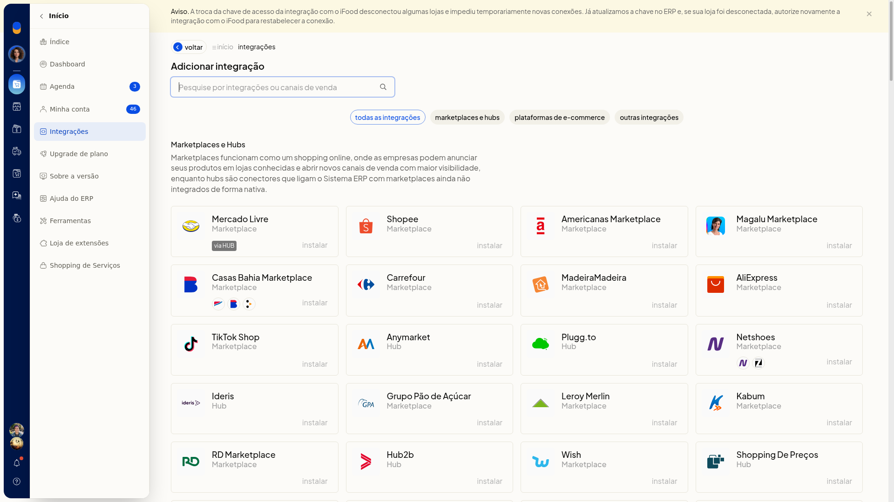
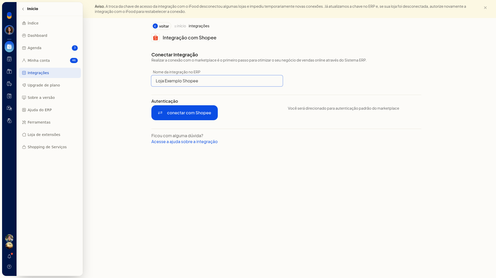
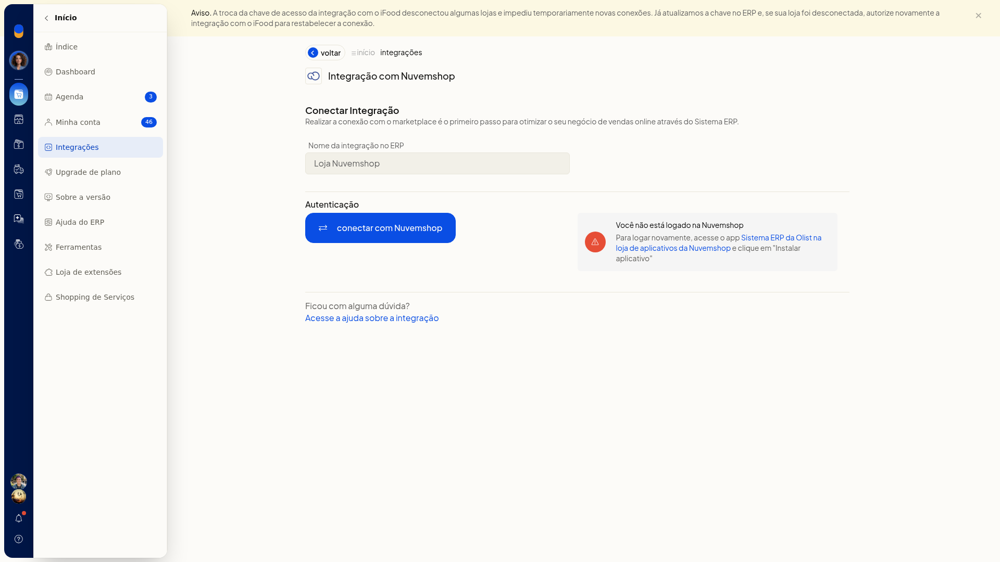

Instalar e conectar uma integração
Importante
- No menu de ações do card não há instalar nem conectar. Para instalar, use Adicionar integração. Para uma integração já listada e ainda não conectada, use Gerenciar.
- Na Nuvemshop, instale antes o aplicativo Sistema ERP da Olist na loja de aplicativos da Nuvemshop e clique em Instalar aplicativo.
Instruções
Instalar pelo catálogo
-
Acesse Início > Integrações.

-
Em Minhas Integrações, clique em Adicionar integração.

-
Na tela Adicionar integração, pesquise em Pesquise por integrações ou canais de venda ou escolha um filtro: todas as integrações, marketplaces e hubs, plataformas de e-commerce ou outras integrações. O catálogo agrupa os cards em Marketplaces e Hubs, Plataformas de e-commerce e Outras integrações.
-
Clique em instalar no card desejado. A tela Conectar Integração abre com o nome do canal.
-
Em Nome da integração no ERP, o nome do canal já vem preenchido. Ajuste se quiser. O campo não é obrigatório.

-
Clique em conectar com o canal, como conectar com Shopee, para seguir a autenticação padrão do marketplace. A conexão só segue depois dessa autorização no canal.
Conectar uma integração já listada
-
Acesse Início > Integrações.
-
Em Minhas Integrações, localize o card com status NÃO CONECTADA.
-
Clique em Gerenciar.
-
Siga a orientação da tela. Na Nuvemshop, a tela informa que não há login e pede para instalar o aplicativo Sistema ERP da Olist na loja de aplicativos da Nuvemshop e clicar em Instalar aplicativo.

-
Confira Nome da integração no ERP. O campo já vem preenchido e não é obrigatório. Se precisar, use o link Acesse a ajuda sobre a integração.
-
Clique em conectar com Nuvemshop para iniciar a conexão com o canal. A autorização final acontece no próprio canal.
Resultado
A tela Conectar Integração mostra o nome da integração no ERP e o botão para conectar com o canal, antes da autorização no canal.
Informações adicionais
Em Marketplaces e Hubs, marketplaces anunciam produtos em lojas conhecidas. Hubs ligam o ERP a marketplaces ainda não integrados de forma nativa.
Alguns cards exibem Marketplace, Hub, via HUB ou BETA. A ação no catálogo continua sendo instalar.